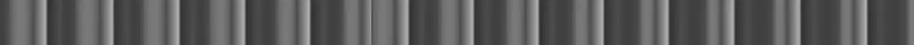

A full-bleed route curtain modeled on a real theatrical tab (tableau/opera-drape) curtain: the rigging where a line of rings runs on the diagonal from a panel's center-meeting bottom corner up to a fixed tie-off roughly a third of the way up the wing side, so hauling it draws that corner UP AND OUT along a curved diagonal while the header stays pinned, gathering the fabric into a swag before the whole tied-back panel retracts offscreen; a different axis of motion from curtain-traveler-draw's horizontal parting on a corded track.

Rendered on the shadcn default neutral palette with harness-generated props.
pnpm dlx shadcn@4.21.0 add @ns-ui/curtain-tab-diagonal
| licence | ASSET |
|---|---|
| primitive base | none |
| type | registry:ui |
| files | src/components/ui/curtain-tab-diagonal.tsx |
| npm deps pulled | none beyond the pre-installed peer set |
| registry deps | — |
| semantic / palette / hex | 0 / 1 / 0 |
| writes shared ui/ | yes — can overwrite the project’s own primitives |